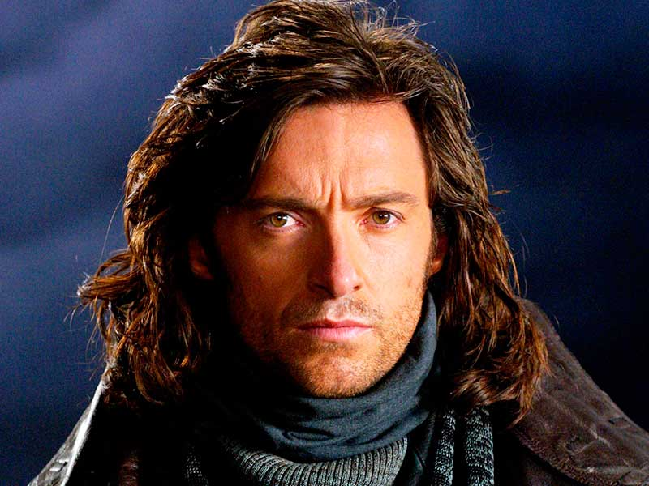
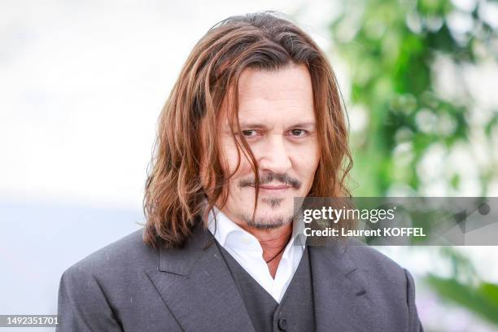
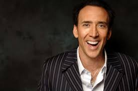

Хью Майкл Дже́кман
Дата рождения: 12 октября 1968.
Город: Сидней, Австралия

Джон Кри́стофер (Джо́нни) Депп II
Дата рождения: 9 июня 1963
Город: Оуэнсборо, Кентукки, США.

Ни́колас Кейдж
Дата рождения: 7 января 1964
Город: Лонг-Бич, Калифорния, США
Джон Кри́стофер (Джо́нни) Депп II
(англ. John Christopher «Johnny» Depp II; род. 9 июня 1963, Оуэнсборо, Кентукки, США)
Американский актёр, кинорежиссёр, музыкант, сценарист и продюсер.
Наибольшую известность Джонни принесли роли в фильмах Тима Бёртона, в таких известных картинах, как:
«Эдвард Руки-ножницы», «Сонная Лощина», «Чарли и шоколадная фабрика», «Эд Вуд», «Суини Тодд, демон-парикмахер с Флит-стрит» и «Алиса в Стране чудес»,
мультфильм «Труп невесты», а также образ капитана Джека Воробья в серии фильмов «Пираты Карибского моря».
Наиболее значимыми фильмами были признаны такие картины, как «Что гложет Гилберта Грэйпа», «Бенни и Джун», «Мертвец», «Донни Браско», «Страх и ненависть в Лас-Вегасе», «Кокаин», «Волшебная страна», «Турист».
(англ. John Christopher «Johnny» Depp II; род. 9 июня 1963, Оуэнсборо, Кентукки, США)
Американский актёр, кинорежиссёр, музыкант, сценарист и продюсер.
Наибольшую известность Джонни принесли роли в фильмах Тима Бёртона, в таких известных картинах, как:
«Эдвард Руки-ножницы», «Сонная Лощина», «Чарли и шоколадная фабрика», «Эд Вуд», «Суини Тодд, демон-парикмахер с Флит-стрит» и «Алиса в Стране чудес»,
мультфильм «Труп невесты», а также образ капитана Джека Воробья в серии фильмов «Пираты Карибского моря».
Наиболее значимыми фильмами были признаны такие картины, как «Что гложет Гилберта Грэйпа», «Бенни и Джун», «Мертвец», «Донни Браско», «Страх и ненависть в Лас-Вегасе», «Кокаин», «Волшебная страна», «Турист».
Альфре́до Джеймс (Аль) Пачи́но
(англ. Alfredo James (Al) Pacino; род. 25 апреля 1940, Восточный Гарлем, Манхэттен, Нью-Йорк, США)
Американский актёр театра, кино и телевидения, кинорежиссёр, сценарист.
Наиболее знаменит своими ролями гангстеров — Майкл Корлеоне в трилогии Фрэнсиса Форда Копполы «Крёстный отец» (1972, 1974, 1990) и Тони Монтана в фильме Брайана Де Пальма «Лицо со шрамом» (1983). Роль Фрэнка Слейда в фильме «Запах женщины» (1992) принесла актёру «Оскар» в номинации Лучшая мужская роль, что стало его первым успехом после семи предыдущих номинаций.
Аль Пачино дебютировал в кино в 1969 году в фильме «Я, Натали», сыграв в нём незначительную второстепенную роль. В 1971 году он снялся во втором фильме, но теперь уже сыграл главную роль в драме «Паника в Нидл-Парке». В этом фильме актёра заметил Коппола и пригласил в «Крёстный отец» на роль Майкла Корлеоне.
Помимо удачной карьеры в кино, Аль Пачино является знаковым театральным актёром. В 1969 и 1977 годах он был награждён престижной театральной премией «Тони». Кроме того, он является обладателем множества других наград, в том числе и от Американского института киноискусства. Аль Пачино вместе с Эллен Бёрстин возглавляет Актёрскую студию в Нью-Йорке.
(англ. Alfredo James (Al) Pacino; род. 25 апреля 1940, Восточный Гарлем, Манхэттен, Нью-Йорк, США)
Американский актёр театра, кино и телевидения, кинорежиссёр, сценарист.
Наиболее знаменит своими ролями гангстеров — Майкл Корлеоне в трилогии Фрэнсиса Форда Копполы «Крёстный отец» (1972, 1974, 1990) и Тони Монтана в фильме Брайана Де Пальма «Лицо со шрамом» (1983). Роль Фрэнка Слейда в фильме «Запах женщины» (1992) принесла актёру «Оскар» в номинации Лучшая мужская роль, что стало его первым успехом после семи предыдущих номинаций.
Аль Пачино дебютировал в кино в 1969 году в фильме «Я, Натали», сыграв в нём незначительную второстепенную роль. В 1971 году он снялся во втором фильме, но теперь уже сыграл главную роль в драме «Паника в Нидл-Парке». В этом фильме актёра заметил Коппола и пригласил в «Крёстный отец» на роль Майкла Корлеоне.
Помимо удачной карьеры в кино, Аль Пачино является знаковым театральным актёром. В 1969 и 1977 годах он был награждён престижной театральной премией «Тони». Кроме того, он является обладателем множества других наград, в том числе и от Американского института киноискусства. Аль Пачино вместе с Эллен Бёрстин возглавляет Актёрскую студию в Нью-Йорке.
Ро́берт Э́нтони Де Ни́ро-мла́дший (англ. Robert Anthony De Niro, Jr.;
род. 17 августа 1943, Нью-Йорк, Нью-Йорк или Манхэттен, Нью-Йорк)
Американский актёр, продюсер и режиссёр.
Наиболее известен своей работой в криминальных фильмах, триллерах и сотрудничеством с режиссёром Мартином Скорсезе. Лауреат премий «Золотой глобус» (1981, 2011) и «Оскар» (1975, 1981) (имеет более 35 наград за роли в кино).
род. 17 августа 1943, Нью-Йорк, Нью-Йорк или Манхэттен, Нью-Йорк)
Американский актёр, продюсер и режиссёр.
Наиболее известен своей работой в криминальных фильмах, триллерах и сотрудничеством с режиссёром Мартином Скорсезе. Лауреат премий «Золотой глобус» (1981, 2011) и «Оскар» (1975, 1981) (имеет более 35 наград за роли в кино).
Ни́колас Кейдж (англ. Nicolas Cage; настоящее имя — Ни́колас Ким Ко́ппола (англ. Nicolas Kim Coppola)
род. 7 января 1964, Лонг-Бич, Лос-Анджелес, Калифорния, США)
Американский актёр, кинорежиссёр и продюсер. Лауреат премий «Оскар» и «Золотой глобус».
Кейдж известен огромным диапазоном ролей: от голливудских блокбастеров и фестивальных шедевров до малобюджетных комедий и откровенно провальных проектов.
Из-за особенности игры в кино и отсутствия однозначного амплуа Кейдж приобрёл культовый статус среди поклонников его творчества и титул одного из самых спорных актёров современности.
род. 7 января 1964, Лонг-Бич, Лос-Анджелес, Калифорния, США)
Американский актёр, кинорежиссёр и продюсер. Лауреат премий «Оскар» и «Золотой глобус».
Кейдж известен огромным диапазоном ролей: от голливудских блокбастеров и фестивальных шедевров до малобюджетных комедий и откровенно провальных проектов.
Из-за особенности игры в кино и отсутствия однозначного амплуа Кейдж приобрёл культовый статус среди поклонников его творчества и титул одного из самых спорных актёров современности.
Хью Майкл Дже́кман (англ. Hugh Michael Jackman; род. 12 октября 1968, Сидней, Новый Южный Уэльс, Австралия)
Австралийский актёр, певец и продюсер.
Стал известен широкой публике по роли супергероя-мутанта Росомахи в серии фильмов «Люди Икс».
Вершиной его актёрского мастерства по мнению критиков признана работа в детективном триллере «Пленницы» (2013).
Широко известен по фильмам «Кейт и Лео», «Пароль „Рыба-меч“», «Ван Хельсинг», «Фонтан», «Престиж», «Живая сталь», «Отверженные», «Робот по имени Чаппи», «Австралия» и «Величайший шоумен».
Номинант на премии «Оскар» (2013), BAFTA (2013) и «Золотой глобус» (2002, 2018), обладатель премии «Золотой глобус» (2013), театральной премии «Тони» (2004, 2012), телевизионной премии «Эмми» (2005) и музыкальной премии «Грэмми» (2019).
Австралийский актёр, певец и продюсер.
Стал известен широкой публике по роли супергероя-мутанта Росомахи в серии фильмов «Люди Икс».
Вершиной его актёрского мастерства по мнению критиков признана работа в детективном триллере «Пленницы» (2013).
Широко известен по фильмам «Кейт и Лео», «Пароль „Рыба-меч“», «Ван Хельсинг», «Фонтан», «Престиж», «Живая сталь», «Отверженные», «Робот по имени Чаппи», «Австралия» и «Величайший шоумен».
Номинант на премии «Оскар» (2013), BAFTA (2013) и «Золотой глобус» (2002, 2018), обладатель премии «Золотой глобус» (2013), театральной премии «Тони» (2004, 2012), телевизионной премии «Эмми» (2005) и музыкальной премии «Грэмми» (2019).